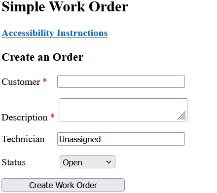

Disopinionated
En cierto sentido, un protocolo es como un buen vino, más viejo es mejor. Es fácil caer en la trampa de lo nuevo y brillante. Estamos condicionados a creer que lo nuevo siempre es mejor, pero a menudo son las formas atemporales y bien sazonadas las que producen los mejores resultados.
En la web, esta idea es más cierta que nunca. Su sitio web debe construirse con la tecnología más simple posible que satisfaga sus necesidades. Esto evita reescrituras costosas porque se encontró un error en el" marco " utilizado para compilarlo. Su sitio debe basarse en principios y protocolos de diseño clásicos y confiables.
Lo simple es Inteligente
Mantener las cosas lo más simples posible tiene ventajas. Dura mucho tiempo. Los sitios web que construyo deberían funcionar tan bien dentro de 20 años como lo hacen cuando recibes la entrega. Mantengo las cosas simples usando una "pila" bien definida de protocolos y lenguajes. La pila que uso es HTML/CSS / JS en el front-end y Python / Flask con una base de datos en el back-end. La parte frontal de este sitio está escrita usando solo la parte HTML/CSS/JS de la pila. Es sencillo.
Propiedad del Código
Algunos desarrolladores web intentan bloquearlo en pagos mensuales. A menudo recomiendan funciones que son complejas o incluyen funciones que no necesita. Las funciones como un formulario de contacto requieren un back-end y pagos mensuales. Para la mayoría de los sitios, es mejor simplemente enumerar la dirección y el número de teléfono de su empresa en el HTML. Sin backend y sin pagos mensuales.
Cuando me contratas para construir un sitio web, eres dueño del producto terminado, incluido todo el código. Cuando recibes un sitio simple / estático, hemos terminado. Puede llevar el código a otra persona para su mantenimiento o reconstrucción. Los sitios complejos pueden requerir un mantenimiento periódico, pero incluso con sitios complejos, usted es el propietario del código y puedo ayudarlo con cosas como la migración o el acceso para cualquier desarrollador que elija. Los detalles sobre estos artículos se proporcionarán cuando reciba la entrega.
Página Principal
Simplicidad
Los sitios más simples son los menos costosos. Utilizan plantillas para crear una experiencia visual enriquecida para su contenido. El objetivo de estos sitios es contar la historia de su negocio y proporcionar su información de contacto.
Se consideran simples (a veces llamados sitios estáticos) porque no toman ningún dato para almacenar o manipular. Tampoco tienen muchas características personalizadas que requieran una codificación extensa.
Plantillas
A continuación se enumeran una muestra de plantillas. Se pueden crear con su contenido por aproximadamente $100 por página. Puede personalizar estas plantillas con sus propias imágenes, estilos de letra y colores. También puede agregar listas y encabezados que faciliten la lectura de su contenido.
Todos los sitios que construyo son accesibles y receptivos, lo que significa que funcionan bien con lectores de pantalla para personas con discapacidad visual y dispositivos móviles.
Página Principal
Single Page Template
Un ejemplo de plantilla de sitio de una sola página. Se puede configurar como una lista de imágenes con contenido textual o con una sola columna como un currículum.
Nota: Muchas imágenes son gratuitas para uso personal, pero tienen tarifas de licencia para uso comercial. Las fotos de veleros en este sitio probablemente tendrían tarifas asociadas si las usara en un sitio que construí para un cliente que paga.
Nota: Muchas imágenes son gratuitas para uso personal, pero tienen tarifas de licencia para uso comercial. Las fotos de veleros en este sitio probablemente tendrían tarifas asociadas si las usara en un sitio que construí para un cliente que paga.
Los artistas necesitan que se les pague.
Página de Aterrizaje
Una página de destino se puede utilizar como entrada a su sitio. En su mayoría es decorativo y está diseñado para crear un ambiente para el sitio. Enlaza con el contenido principal del sitio que utiliza un diseño diferente.
Diseño en "T"
Los diseños en "T" y " L " son similares. La diferencia está en la ubicación del menú de navegación. Ambos diseños son comunes en Internet. En la lista de navegación del diseño " T " ubicada en la parte superior derecha de la página.
Diseño en "L"
El diseño en " L " tiene el menú de navegación en el lado izquierdo de la página debajo del logotipo.
Página Principal
Sitios Web Complejos
Los sitios web complejos tienen una o más de las siguientes características. Tienen un diseño personalizado que el desarrollador necesita dedicar tiempo a implementar, o el cliente ha contratado a un diseñador para crear un sitio web único y el desarrollador tiene que dedicar tiempo a descubrir cómo implementarlo. A menudo hay una gran cantidad de ida y vuelta entre el diseñador, el cliente y el desarrollador antes de que se termine el sitio web. El producto final suele ser impresionante.
También se incluyen en esta categoría los sitios que tienen necesidades complejas de datos, como conectividad de back-end, como un formulario de entrada de usuario, un extenso Script Java(JS) o extensas Hojas de estilo en cascada(CSS).
Debido a lo anterior, estos sitios se facturan por hora. Proporcionaré un presupuesto y me comunicaré con el cliente sobre el progreso. Este sitio, por ejemplo, se basa en una de mis plantillas, pero tiene algunos CSS adicionales y un poco de JS para unirlo. Lo diseñé yo mismo. Cobraría una prima por un sitio de plantilla simple, pero no sería escandaloso.
Diseñadores
Los sitios más atractivos visualmente serán creados por un diseñador. Los diseñadores tienen capacitación y experiencia en arte y diseño gráfico y pueden especificar colores, fuentes, imágenes, logotipos, diseños, efectos y más. El diseñador creará un "marco de alambre" para su sitio que especifique todo lo anterior para mí, el desarrollador. En resumen, ellos crean el diseño y el desarrollador lo implementa. Los diseñadores a veces usan al "experto en branding" de marketing para identificarse y pueden proporcionar un "kit de branding" que contenga lo anterior que el cliente puede usar para otras cosas como señalización, tarjetas de presentación y más.
También diseñé el logotipo yo mismo. Este no es un servicio que ofrezco. El cliente deberá contratar a un diseñador o utilizar uno de los generadores de logotipos en línea gratuitos.
Fotógrafos
Contratar a un fotógrafo es otra excelente manera de hacer que su sitio sea único. Los fotógrafos profesionales tienen las habilidades, las herramientas, la capacitación y la experiencia para hacer que su sitio se destaque. A veces, el diseñador y el fotógrafo son la misma persona, pero a menudo pueden operar por separado
Página Principal
Datos
Data or data processing is best explained by example. If you run a business with some spreadsheets, but maintaining those spreadsheets is getting more complex and time consuming, then data processing could be a solution for you. I can bridge the gap between large solution providers that are expensive and might not have the support for the industry you are in and spreadsheets.
Puedo automatizar el proceso de extraer datos de una hoja de cálculo, realizar un procesamiento complejo de los datos y luego devolver los datos que luego se pueden importar de nuevo a una hoja de cálculo o mostrar en una página web. Mostrar los datos en una página web en su intranet (no en la Internet pública), tiene la ventaja de estar disponible en dispositivos móviles o en su planta de producción sin tener que comprar licencias para hojas de cálculo.
Hay muchas maneras de lograr esto y tengo la capacidad de trabajar con su personal existente y los contratistas de TI para ayudarlo a encontrar una solución que pueda ahorrarle tiempo y dinero, así como impulsar la eficiencia de la producción.
Pila de Tecnología
Un sitio web complejo a menudo tiene dos partes que trabajan juntas para crear el producto terminado. Primero está la parte delantera. Es la parte que ves, el diseño, los colores, las imágenes y el texto que son visibles a través del navegador. Las tecnologías base para el front-end son HTML y CSS. JS se usa a menudo para crear un interés visual adicional y elegir qué texto mostrar. JS permite al desarrollador interactuar con el front-end de formas complejas. La idea clave que debe saber es que todo el trabajo en el front-end lo realiza la computadora del usuario. Los datos solo se recuperan del servidor a través de archivos HTML, se realiza muy poco procesamiento de datos. El front-end es para mostrar datos. Está en "frente" del usuario.
Si el sitio usa o manipula datos proporcionados por el usuario o almacena datos para uso futuro, entonces se necesita un back-end. La combinación de los dos se denomina "pila completa". Las tecnologías de back-end residen en el servidor y recuperan datos del front-end y almacenan o manipulan los datos de alguna manera. El lenguaje de programación Python es muy bueno para la manipulación de datos, mientras que una base de datos se usa con mayor frecuencia para almacenar datos. La mayoría de las veces se utiliza un marco intermediario para mediar entre la base de datos y las partes de manipulación de datos del back-end. El marco que uso con más frecuencia es Flask. Hacer la manipulación y el almacenamiento de datos en el back-end tiene las ventajas de la seguridad y brinda la posibilidad de compartir los datos con otros usuarios, aplicaciones o procesos.
Existen otras formas de procesar y mostrar datos, pero no son tecnologías web y están fuera del alcance de esta discusión. Hay otras "pilas" disponibles, pero la enumerada anteriormente es una de las más simples y confiables.
Página Principal
Ejemplo
El siguiente es un ejemplo del procesamiento de datos que puedo proporcionar. El sitio es un sitio de seguimiento de órdenes de trabajo. Es independiente y de uso gratuito. Está bajo la licencia MIT como software gratuito y de código abierto.Más información acerca de este software se puede encontrar en mi sitio github.
Haga clic en la imagen de abajo para acceder al software.

Página Principal
¿Listo para Hablar?
Si está considerando comprar, entonces el primer paso es programar una cita, para que podamos analizar sus necesidades.
Las consultas son gratuitas y disfrutaría discutir el proyecto con usted. Ningún proyecto es demasiado pequeño y puedo ayudarte a descubrir qué necesitas. No considero estas discusiones una oportunidad de venta, sino más bien una oportunidad para conocernos unos a otros. Si necesitas algo más que lo que puedo ofrecerte, entonces te lo diré. Ningún daño hecho. Si se encuentra en el área de Reno/Sparks, podemos reunirnos en persona en el lugar que elija; de lo contrario, podemos programar una llamada de Zoom. Espero escuchar de usted.
Por favor, póngase en contacto conmigo en mark_g_king@mail.com
Página Principal